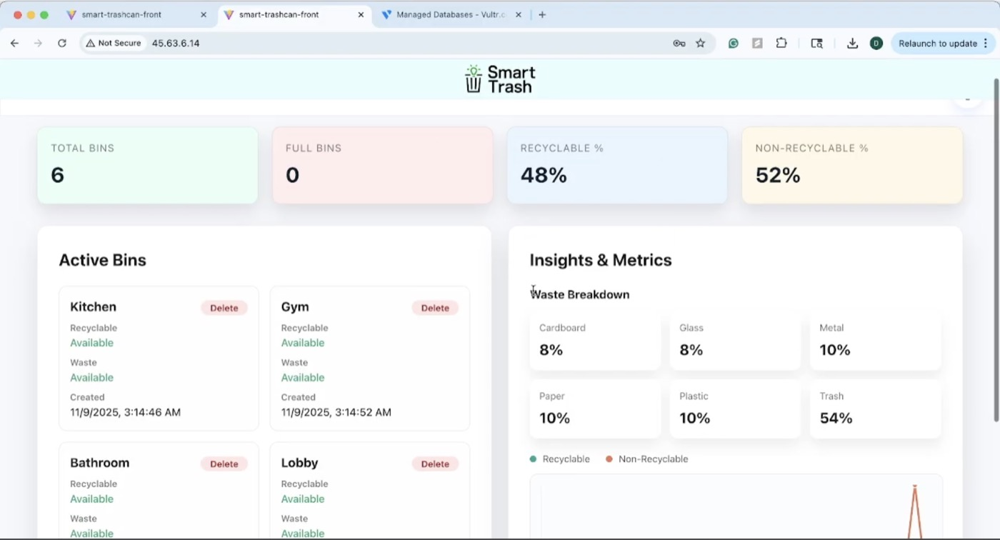

Project
Smart Trash
A camera-and-computer-vision trash can that sorts your waste into recycling or landfill automatically. Built at MakeCU with a team of four; winner of Best Pitch and Best Use of Vultr.


Overview
Built for MakeCU, Columbia’s hardware hackathon: campus bins are a mess, since people can’t always tell what’s recyclable and there’s no way to know a bin is full until it’s overflowing. SmartTrash is a computer-vision-powered trash can that classifies an object as recyclable or not, auto-sorts what the person throws out, and updates a live dashboard tracking metrics like trash classification, amount of trash, fullness level, and trash thrown over time.
Tech Stack
Key Features
- The system is built using the Raspberry Pi 5 module; its advanced CPU and GPU make it optimal for complex computer vision. We feed our image data from an Arducam 5MP camera to a pre-trained ResNet model.
- DigitalOcean’s Gradient AI provided us with extremely accurate model weights that we integrated into our model, allowing our inference to land over 90% of the time.
- The sorting mechanism is a 2000 Series Dual Mode servo with a wooden plank attached; the trash is sorted depending on the direction the servo spins. IR break-beam sensors at the top of the bin constantly monitor its capacity and update the live dashboard.
- A Vultr backend and PostgreSQL database power a live dashboard where waste managers can monitor every bin from anywhere.
- Laser-cut plywood enclosure, prototyped end to end over a single hackathon weekend.